Rear Axle - 216RBI
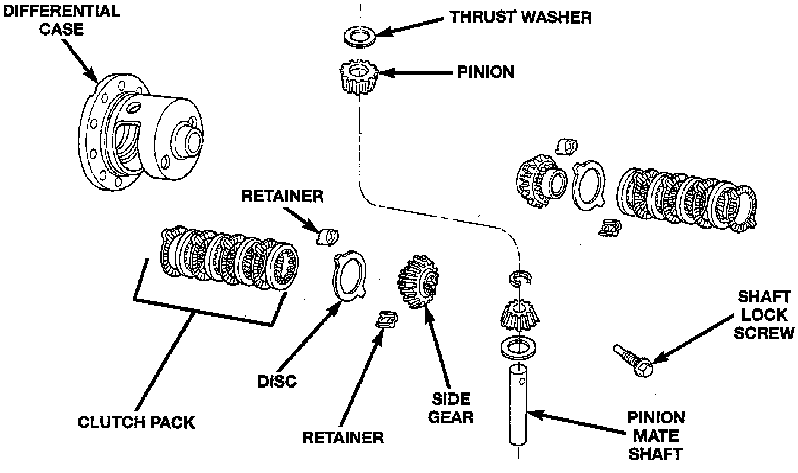
NOTE: The Trac-Lok differential components are illustrated. Refer to this illustration during repair service.
DISASSEMBLY
1. Clamp Side Gear Holding Tool 6963-A in a vise.
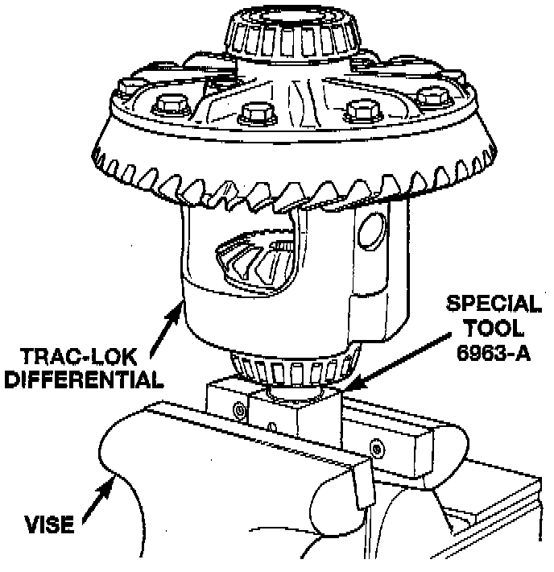
2. Position the differential case on Side Gear Holding Tool 6963-A.
3. Remove ring gear, if necessary. Ring gear removal is necessary only if the ring gear is to be replaced. The Trac-Lok differential can be serviced with the ring gear installed.
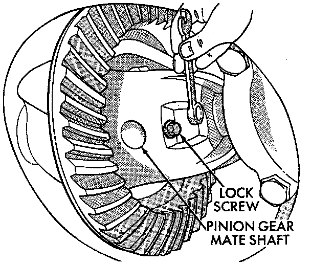
4. Remove the pinion gear mate shaft lock screw.
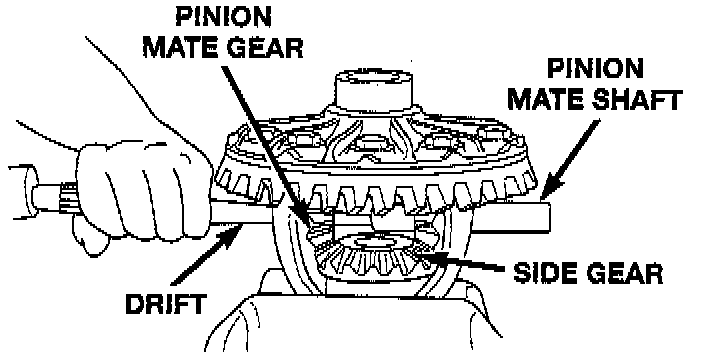
5. Remove the pinion gear mate shaft. If necessary, use a drift and hammer.
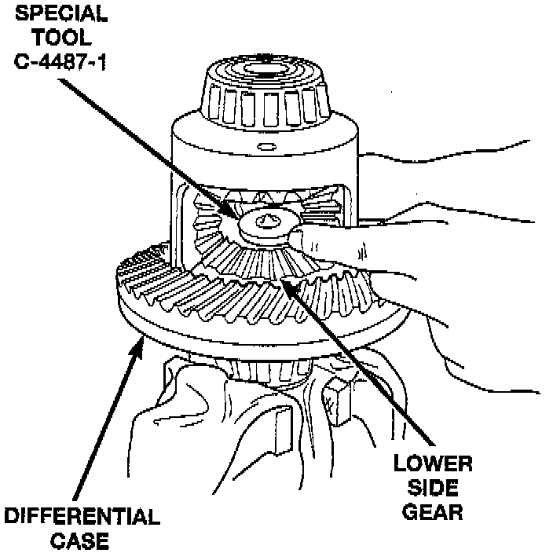
6. Install and lubricate Step Plate C-4487-1, or equivalent.
7. Assemble Threaded Adapter C-4487-3, or equivalent into top side gear. Thread Forcing Screw C-4487-2 into adapter until it becomes centered in adapter plate.
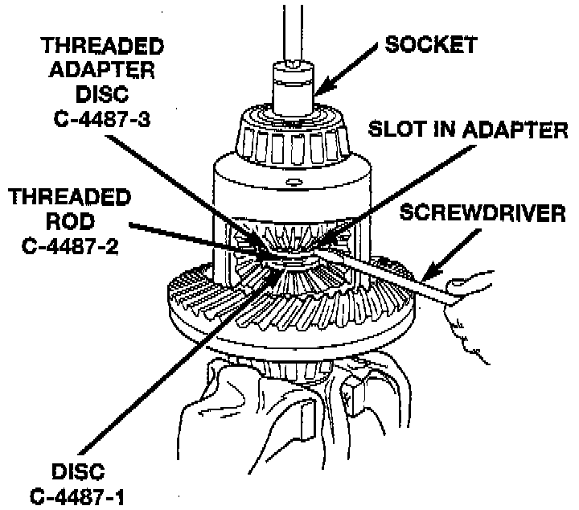
8. Position a small screwdriver in slot of Threaded Adapter C-4487-3, or equivalent to prevent adapter from turning.
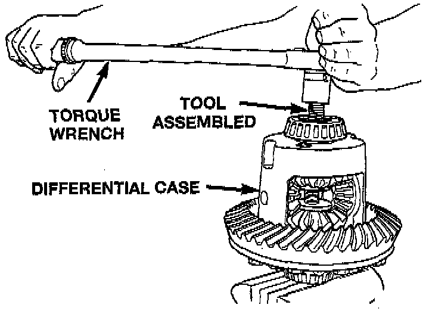
9. Tighten forcing screw tool 122 Nm (90 ft. lbs.) (maximum) to compress Belleville springs in clutch packs.
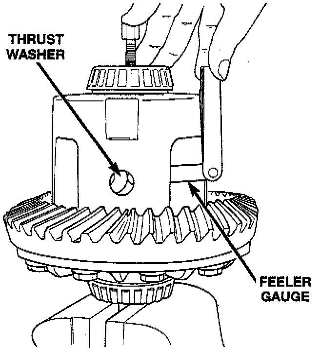
10. Using an appropriate size feeler gauge, remove thrust washers from behind the pinion gears.
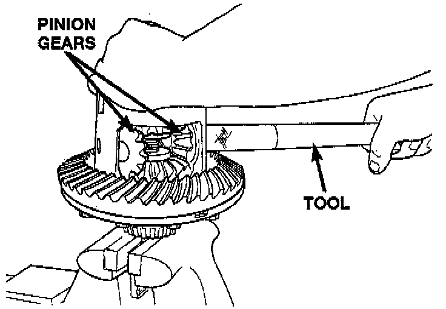
11. Insert Turning Bar C-4487-4, or equivalent in case.
12. Loosen the Forcing Screw C-4487-2, or equivalent in small increments until the clutch pack tension is relieved and the differential case can be turned using Turning Bar C-4487-4, or equivalent.
13. Rotate differential case until the pinion gears can be removed.
14. Remove pinion gears from differential case.
15. Remove Forcing Screw C-4487-2, Step Plate C-4487-1, and Threaded Adapter C-4487-3, or equivalents.
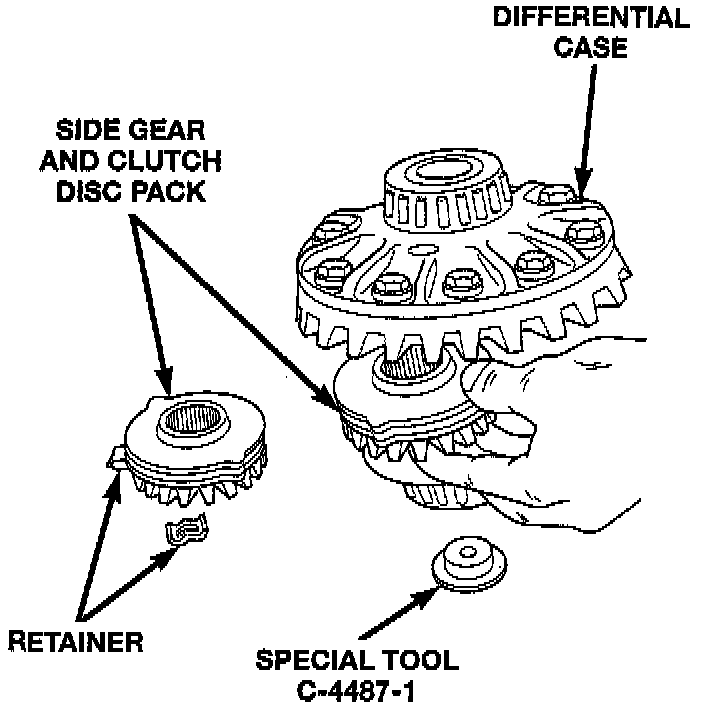
16. Remove top side gear, clutch pack retainer, and clutch pack. Keep plates in correct order during removal.
17. Remove differential case from Side Gear Holding Tool 6963-A, or equivalent. Remove side gear, clutch pack retainer, and clutch pack. Keep plates in correct order during removal.
NOTE: The clutch discs are replaceable as complete sets only. If one clutch disc pack is damaged, both packs must be replaced. Lubricate each component with gear lubricant before assembly.
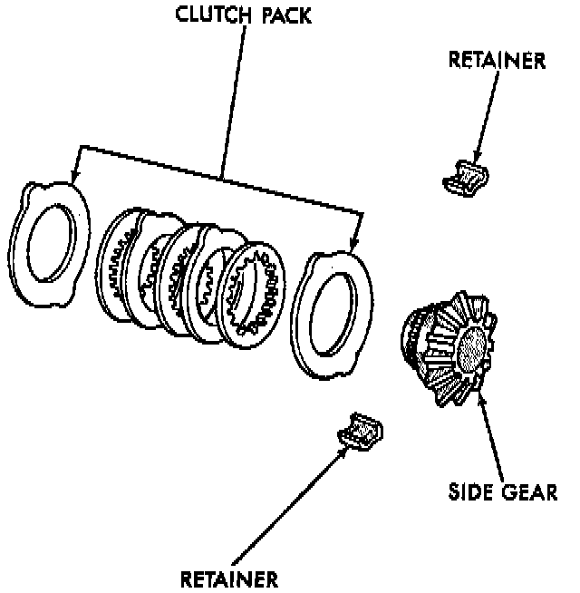
ASSEMBLY
1. Assemble the clutch discs into packs and secure disc packs with retaining clips.
2. Position assembled clutch disc packs on the side gear hubs.
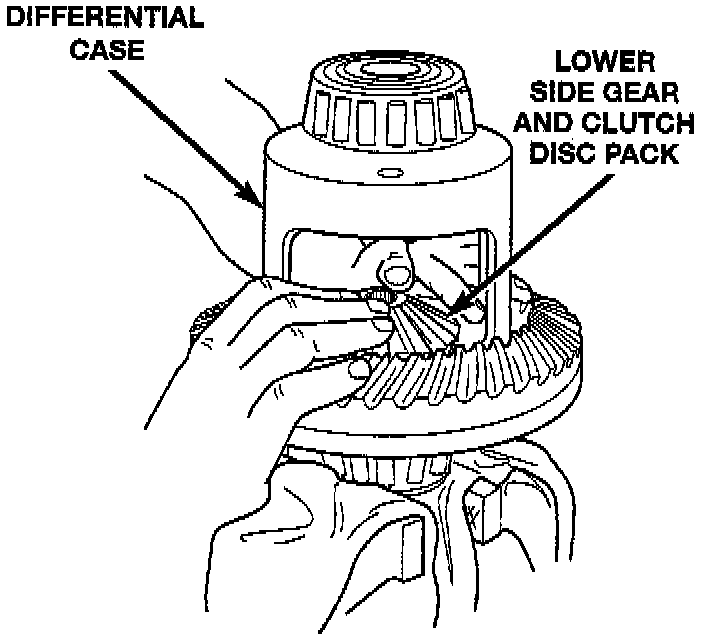
3. Install clutch pack and side gear in the ring gear side of the differential case. Be sure clutch pack retaining clips remain in position and are seated in the case pockets.
4. Position the differential case on Side Gear Holding Tool 6963-A, or equivalent.
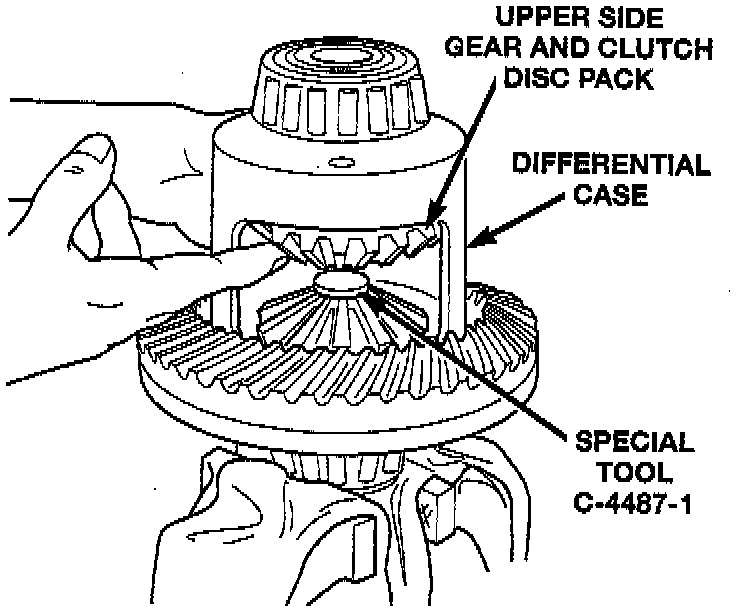
5. Install lubricated Step Plate C-4487-1, or equivalent on side gear.
6. Install the upper side gear and clutch disc pack.
7. Hold assembly in position. Insert Threaded Adapter C-4487-3, or equivalent into top side gear.
8. Insert Forcing Screw C-4487-2, or equivalent.
9. Tighten forcing screw tool to slightly compress clutch discs.
10. Place pinion gears in position in side gears and verify that the pinion mate shaft hole is aligned.
11. Rotate case with Turning Bar C-4487-4, or equivalent until the pinion mate shaft holes in pinion gears align with holes in case. It may be necessary to slightly tighten the forcing screw in order to install the pinion gears.
12. Tighten forcing screw to 122 Nm (90 ft. lbs.) to compress the Belleville springs.
13. Lubricate and install thrust washers behind pinion gears and align washers with a small screw driver. Insert mate shaft into each pinion gear to verify alignment.
14. Remove forcing screw, threaded adapter, and step plate.
15. Install pinion gear mate shaft and align holes in shaft and case.
16. Install the pinion mate shaft lock screw finger tight to hold shaft during differential installation.
NOTE: If replacement side and/or pinion gears and thrust washers were installed, it is not necessary to measure the side gear backlash. Correct fit is due to close machining tolerances during manufacture.
17. Lubricate all differential components with hypoid gear lubricant.